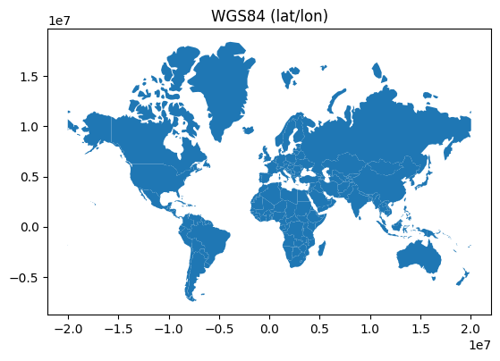
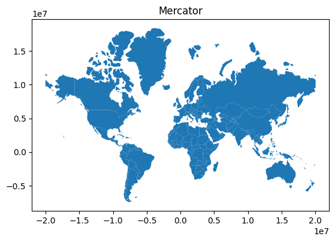
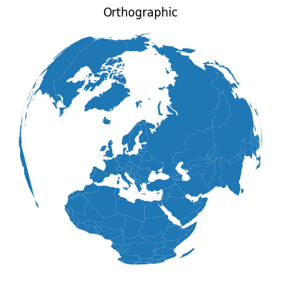

import geopandas as gpdCoordinate Reference Systems (CRS)
A CRS tells python how coordinates are related to places on the Earth. A map projection (or a projected coordinate system) is a systematic transformation of the latitudes and longitudes into a plain surface where units are quite commonly represented as meters (instead of decimal degrees). This transformation is used to represent the three dimensional earth on a flat, two dimensional map.
There is no perfect projection and we should know the strength and weaknesses of projection systems and choose a projection system that best fits our purpose.
We can reproject the geometries from crs to another using to_crs() function from GeoPandas.
We can define the coordinate system in different formats using pyproj CRS
Import and view the data
# Read the data
world = gpd.read_file(gpd.datasets.get_path('naturalearth_lowres'))world.head(4)| pop_est | continent | name | iso_a3 | gdp_md_est | geometry | |
|---|---|---|---|---|---|---|
| 0 | 889953.0 | Oceania | Fiji | FJI | 5496 | MULTIPOLYGON (((180.00000 -16.06713, 180.00000... |
| 1 | 58005463.0 | Africa | Tanzania | TZA | 63177 | POLYGON ((33.90371 -0.95000, 34.07262 -1.05982... |
| 2 | 603253.0 | Africa | W. Sahara | ESH | 907 | POLYGON ((-8.66559 27.65643, -8.66512 27.58948... |
| 3 | 37589262.0 | North America | Canada | CAN | 1736425 | MULTIPOLYGON (((-122.84000 49.00000, -122.9742... |
View the CRS of the data
# Check the CRS of the data.
# Lat Long data should have EPSG 4326 and WGS 84
world.crs<Geographic 2D CRS: EPSG:4326>
Name: WGS 84
Axis Info [ellipsoidal]:
- Lat[north]: Geodetic latitude (degree)
- Lon[east]: Geodetic longitude (degree)
Area of Use:
- name: World.
- bounds: (-180.0, -90.0, 180.0, 90.0)
Datum: World Geodetic System 1984 ensemble
- Ellipsoid: WGS 84
- Prime Meridian: GreenwichChange the CRS and visualize the data
ax = world.plot()
ax.set_title("WGS84 (lat/lon)")
world = world[(world.name != "Antarctica") & (world.name != "Fr. S. Antarctic Lands")]
# Data in Mercator Projection
world = world.to_crs("EPSG:3395")
ax = world.plot()
ax.set_title("Mercator")Text(0.5, 1.0, 'Mercator')

Orthographic Projection
# Orthographic projection
from pyproj import CRS# Define an orthographic projection, from: http://www.statsmapsnpix.com/2019/09/globe-projections-and-insets-in-qgis.html
ortho = CRS.from_proj4(
"+proj=ortho +lat_0=60.00 +lon_0=23.0000 +x_0=0 +y_0=0 +a=6370997 +b=6370997 +units=m +no_defs"
)
# Re-project and plot
ax = world.to_crs(ortho).plot()
# Remove x and y axis
ax.axis("off")
ax.set_title("Orthographic")Text(0.5, 1.0, 'Orthographic')